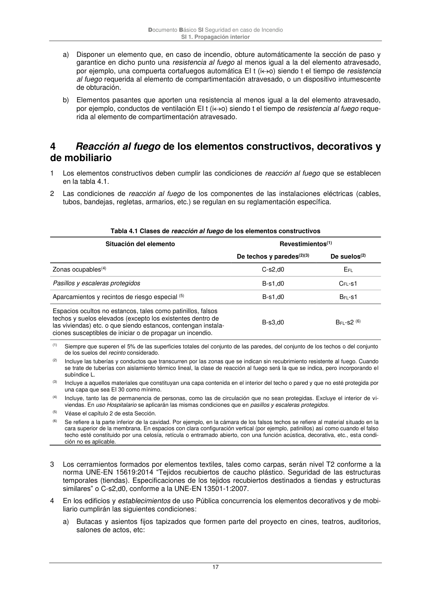

DB-SI · 4 Reacción al fuego de los elementos constructivos, decorativos y de mobiliario · versión 2025-03-04 · capa oficial
Formatos: JSON compacto · Markdown · PDF fuente
Ámbito del documento · texto del ámbito · documento y tablas
ID técnico a0044 · PDF pág. 17-19 · jerarquía no validada por persona · contrastado con el literal de la página 17 (marcador PDF); no validado por persona · padre: a0030
Reacción al fuego de los elementos constructivos, decorativos y de mobiliario de mobiliario 1 Los elementos constructivos deben cumplir las condiciones de reacción al fuego que se establecen en la tabla 4.1. 2 Las condiciones de reacción al fuego de los componentes de las instalaciones eléctricas (cables, tubos, bandejas, regletas, armarios, etc.) se regulan en su reglamentación específica. Tabla 4.1 Clases de reacción al fuego de los elementos constructivos Situación del elemento Revestimientos(1) De techos y paredes(2)(3) De suelos(2) Zonas ocupables(4) C-s2,d0 EFL Pasillos y escaleras protegidos B-s1,d0 CFL-s1 Aparcamientos y recintos de riesgo especial (5) B-s1,d0 BFL-s1 Espacios ocultos no estancos, tales como patinillos, falsos techos y suelos elevados (excepto los existentes dentro de las viviendas) etc. o que siendo estancos, contengan instala- ciones susceptibles de iniciar o de propagar un incendio. B-s3,d0 BFL-s2 (6) (1) Siempre que superen el 5% de las superficies totales del conjunto de las paredes, del conjunto de los techos o del conjunto de los suelos del recinto considerado. (2) Incluye las tuberías y conductos que transcurren por las zonas que se indican sin recubrimiento resistente al fuego. Cuando se trate de tuberías con aislamiento térmico lineal, la clase de reacción al fuego será la que se indica, pero incorporando el subíndice L. (3) Incluye a aquellos materiales que constituyan una capa contenida en el interior del techo o pared y que no esté protegida por una capa que sea EI 30 como mínimo. (4) Incluye, tanto las de permanencia de personas, como las de circulación que no sean protegidas. Excluye el interior de vi- viendas. En uso Hospitalario se aplicarán las mismas condiciones que en pasillos y escaleras protegidos. (5) Véase el capítulo 2 de esta Sección. (6) Se refiere a la parte inferior de la cavidad. Por ejemplo, en la cámara de los falsos techos se refiere al material situado en la cara superior de la membrana. En espacios con clara configuración vertical (por ejemplo, patinillos) así como cuando el falso techo esté constituido por una celosía, retícula o entramado abierto, con una función acústica, decorativa, etc., esta condi- ción no es aplicable. 3 Los cerramientos formados por elementos textiles, tales como carpas, serán nivel T2 conforme a la norma UNE-EN 15619:2014 “Tejidos recubiertos de caucho plástico. Seguridad de las estructuras temporales (tiendas). Especificaciones de los tejidos recubiertos destinados a tiendas y estructuras similares” o C-s2,d0, conforme a la UNE-EN 13501-1:2007. 4 En los edificios y establecimientos de usoPública concurrencia los elementos decorativos y de mobi- liario cumplirán las siguientes condiciones: a) Butacas y asientos fijos tapizados que formen parte del proyecto en cines, teatros, auditorios, salones de actos, etc: Documento Básico SI en caso de Incendio SI 1. Propagación interior 18 Pasan el ensayo según las normas siguientes: - UNE-EN 1021-1:2015 “Valoración de la inflamabilidad del mobiliario tapizado - Parte 1: fuen- te de ignición: cigarrillo en combustión”. - UNE-EN 1021-2:2006 “Valoración de la inflamabilidad del mobiliario tapizado - Parte 2: fuen- te de ignición: llama equivalente a una cerilla”. b) Elementos textiles suspendidos, como telones, cortinas, cortinajes, etc.: Clase 1 conforme a la norma UNE-EN 13773:2003 “Textiles y productos textiles. Comportamien- to al fuego. Cortinas y cortinajes. Esquema de clasificación”. Documento Básico SI en caso de Incendio SI 2. Propagación exterior 19

PDF fuente redistribuible: copia fiel enlazada en esta página (SHA256 verificado).